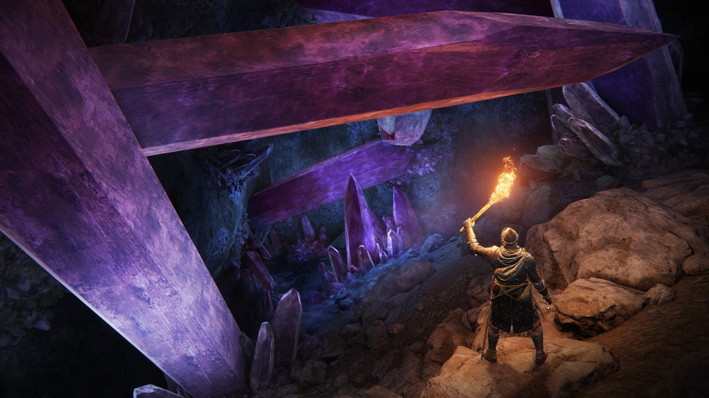
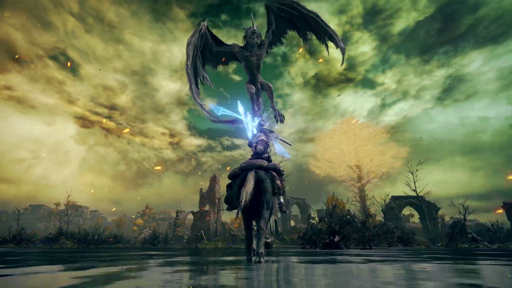

Elden Ring: A Tarnished Journey
Rise, Tarnished, and be guided by grace to brandish the power of the Elden Ring and become an Elden Lord in the Lands Between. Elden Ring, developed by FromSoftware, is a challenging and rewarding action RPG with a vast open world, intricate lore, and deep combat system. Prepare to die... a lot, but also to experience an unforgettable adventure.
Our Review
Elden Ring is a triumph in game design. It takes the Soulsborne formula and expands upon it in exciting ways, offering a truly open world experience while retaining the challenging combat and rewarding exploration that FromSoftware is known for.
World and Lore
The Lands Between is a breathtakingly beautiful and hauntingly melancholic world. From the golden Erdtree to the crumbling ruins of ancient civilizations, every corner of this world is filled with secrets to uncover and stories to piece together. The lore is rich and deep, inviting players to delve into the history of the Lands Between and its inhabitants.
Combat and Gameplay
Elden Ring's combat is challenging but fair, requiring patience, skill, and strategy. The game offers a wide variety of weapons, spells, and skills to master, allowing players to create unique builds and playstyles. The open world encourages exploration and experimentation, with hidden dungeons, challenging bosses, and optional areas to discover.
Visuals and Atmosphere
Elden Ring is a visually stunning game, with detailed environments, impressive character models, and breathtaking vistas. The art style is dark and atmospheric, creating a sense of wonder and dread as you explore the Lands Between.
Pros
- Vast and beautiful open world
- Deep and rewarding combat system
- Intriguing lore and world-building
- High replay value with diverse builds
Cons
- Can be very challenging for new players
- Open world can feel overwhelming at times
Overall
Elden Ring is a masterpiece of game design that will challenge and reward players in equal measure. It's a must-play for fans of action RPGs and anyone looking for a truly epic adventure.
Screenshots



Guides and Walkthroughs
Beginner's Guide to Elden Ring
Starting your journey in the Lands Between can be daunting. Here are some tips for new players:
- Explore and Level Up: Don't rush into boss fights unprepared. Explore the world, collect runes, and level up your character.
- Experiment with Weapons and Skills: Find a weapon that suits your playstyle and experiment with different Ashes of War to enhance your combat abilities.
- Summon Spirits: Use Spirit Ashes to summon helpful allies in battle, especially against challenging bosses.
- Learn Enemy Patterns: Observe enemy attack patterns and learn to dodge and parry effectively.
- Don't Give Up: Elden Ring is a challenging game, but perseverance is key. Learn from your mistakes and keep trying.
Best Builds for Elden Ring
Elden Ring offers a wide variety of builds to suit different playstyles. Here are a few popular options:
- Strength Build: Wield colossal weapons and deal massive damage with heavy attacks.
- Dexterity Build: Focus on speed and agility, using katanas or twinblades for swift strikes.
- Intelligence Build: Cast powerful sorceries and dominate enemies from afar.
- Faith Build: Utilize incantations for healing, buffs, and holy damage.
- Quality Build: Balance strength and dexterity for a versatile playstyle.
Experiment with different stats and equipment to find a build that works best for you.
Hidden Secrets and Easter Eggs
The Lands Between is full of hidden secrets and easter eggs. Here are a few to discover:
- Secret Walls: Some walls can be revealed by hitting them, leading to hidden areas and treasures.
- Mimic Chests: Be wary of chests that come to life and attack you.
- Hidden Merchants: Some merchants are hidden in unexpected locations, offering unique items.
- References to Other Games: Keep an eye out for subtle references to other FromSoftware games.
Exploring every nook and cranny of the world can lead to exciting discoveries.